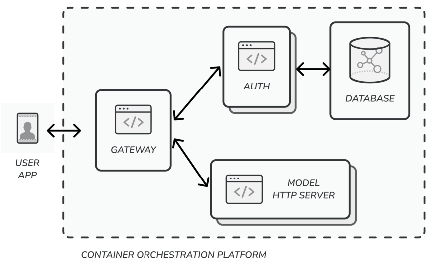
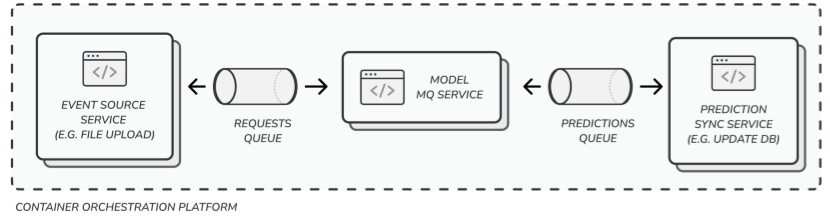
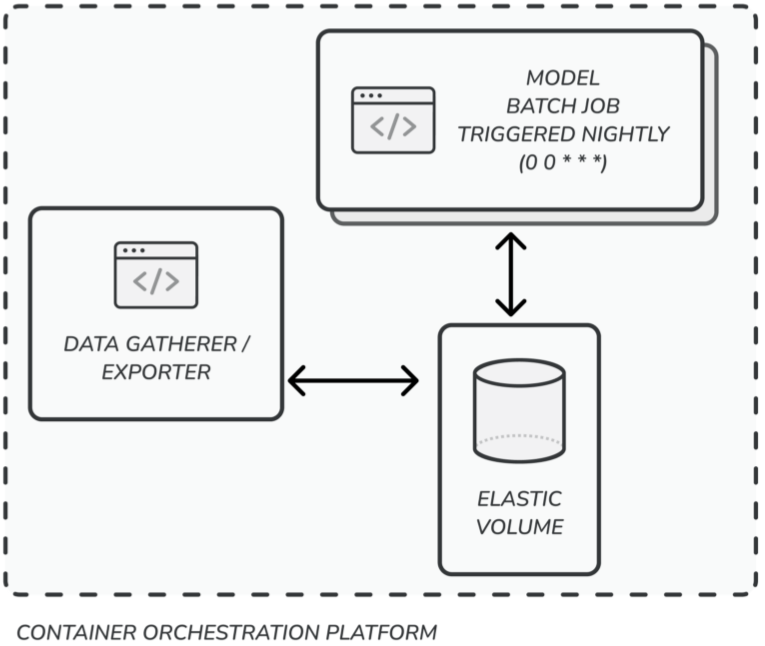
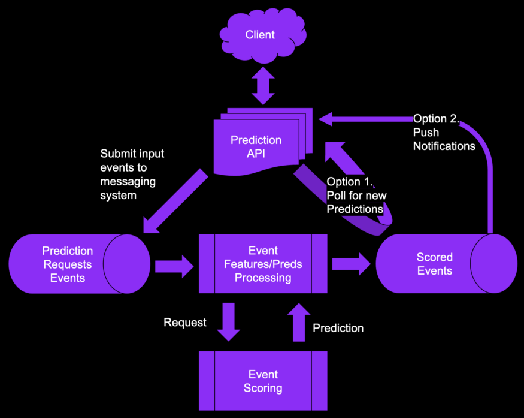
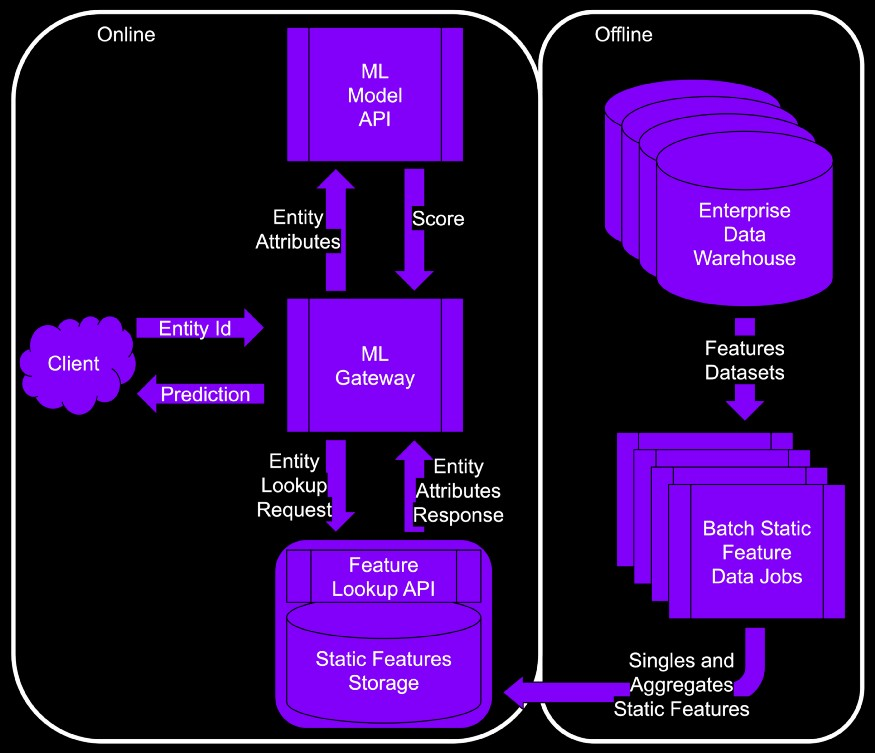
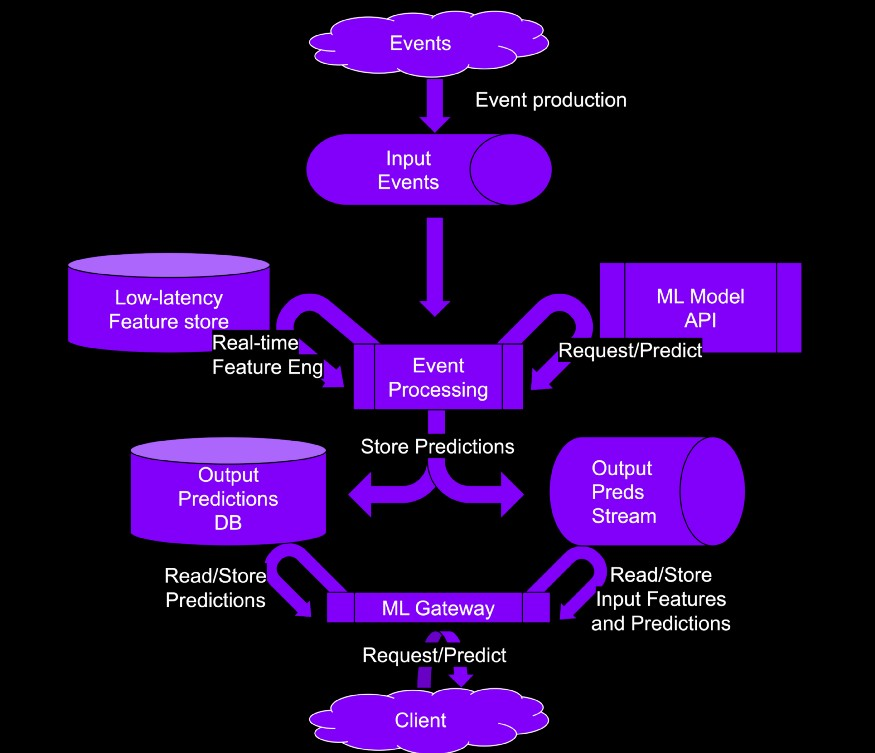

Deployment
Misc
- Questions:
- Does it need to be <10ms or offline?
- Do you know your approximate “optimizing” and “satisficing” metrics thresholds?
- Did you verify that your input features can be looked up in a low-read-latency DB?
- Could you find anything that can be precomputed and cached?
- Additional Stages
- Run a silent deployment
- file outputs, alerts, emails are silenced
- Useful for finding bugs
- Run a pilot deployment
- Only a few groups are given permission to use the product
- Receive feedback (e.g. weekly meetings), fix bugs, and make changes
- Run a silent deployment
- Schedule Batch Scoring (article with gh action example)
- e.g. Defining a GitHub Action which will schedule a model scoring script to run at regular intervals.
Authentification
- Users of your product need to go through some kind of authentification
- Posit Connect
- Interacts with your local directory so users can use their company usernames and passwords
- also allows you to only give access for specific applications to specific user groups
- Developers don’t need to keep track of extra usernames and passwords
- Interacts with your local directory so users can use their company usernames and passwords
Model Deployment Strategies
Misc
- tl;dr
- The model predicts on data generated by a user action (e.g. text entry), and the user/UI is waiting for a response
- Serve the model with an HTTP endpoint (i.e. API)
- A system event/user action (e.g. a file upload) triggers the model prediction and a separate process acts on the model prediction asynchronously
- Prediction is NOT needed immediately
- Spark Streaming (a little different)
- Streaming data gets input into model thats in Spark as it becomes available, Spark outputs predictions to S3 bucket that is used by an app.
- Refreshing the app, reads data from the S3 bucket and therefore has the latest predictions
- Predictions are made on periodic batches of data
- The model predicts on data generated by a user action (e.g. text entry), and the user/UI is waiting for a response
- Notes from Deploying ML Models Using Containers in Three Ways
- Has py code for each strategy
- Provides tips and best practices
- tl;dr
Strategies
- The model predicts on data generated by a user action (e.g. text entry), and the user/UI is waiting for a response
- Serve the model with an HTTP endpoint (i.e. API)
- model prediction time should be less than 300 ms (standard response time expected for any HTTP service)
- > 300ms means the service is at risk of running behind prediction requests volume, to a point where they start getting timed out
- Tools: plumber, vetiver, flask
- Flask
- Serving flask in production uses gunicorn and gevent behind a nginx server. The serve file gets these set up.
- If you want to change some timeouts and the number of workers, the SERVER_TIMEOUT and SERVER_WORKERS env var can be used.
- Flask
- You can set an auto-scale property with your container orchestration system to scale on CPU utilization (e.g. auto-scale the model service to up to 10 pods if average CPU utilization is above 40%).
- There are ways to hold multiple requests in memory (e.g. using cache) for a really short time (25ms) so that your model can fully utilize memory and perform a mini-batch prediction. Takes effort to implement and ensure threads can respond well.
- model prediction time should be less than 300 ms (standard response time expected for any HTTP service)
- Serve the model with an HTTP endpoint (i.e. API)
- A system event/user action (e.g. a file upload) triggers the model prediction and a separate process acts on the model prediction asynchronously
- Prediction is NOT needed immediately
- Spark Streaming
- Streaming data gets input into model thats in Spark as it becomes available, Spark outputs predictions to S3 bucket that is used by an app.
- Refreshing the app, reads data from the S3 bucket and therefore has the latest predictions
- {sparklyr} + {tidymodels} has many models available.
- See Apache, Spark >> Streaming
- Build low-latency and scalable ML model prediction pipelines using Spark Structured Streaming and MLflow
- py example; shows how to include MLflow model versioning/tracking
- Streaming data gets input into model thats in Spark as it becomes available, Spark outputs predictions to S3 bucket that is used by an app.
- Use a message queue architecture
- Perform mini-batch predictions - pull a few requests at a time and make predictions
- Tools: redis, RabbitMQ, ActiveMQ, pm2
- For loads that need robust message queue stability, and multiple models working on the same data — you can use multiple consumer groups features in Kafka.
- Clearly mark topics (?) for prediction requests to this model and the outputs of the model
- Once the model makes a prediction, you’ll need to have a sync service that does something with the prediction (e.g. update the database)
- Predictions are made on periodic batches of data
- Create a long-running task
- Mount the elastic volume to the container when it comes up
- Create a long-running task
- The model predicts on data generated by a user action (e.g. text entry), and the user/UI is waiting for a response
Include the model in the container build
- This is better than downloading a model each time you want to scale up
- e.g. hugginface model or a pickled model from a S3 bucket or other storage
- Drawback is the large size of the container to push and load from the repo
- Make sure that the model gets downloaded in the right place, especially if you’re using a non-root user in the Dockerfile
- Options
- Download the model in the Dockerfile
- The model is downloaded when the container is built and is included in the image pushed to the repo.
- When the container instance is created, the model is right there, and we can load it faster.
- Include the model in the code repo
- When you copy code into the container, the model get copied as well
- Allows you to version your model.
- To overcome the file size limitation that most repos have, use Git LFS.
- Store in a volume
- Save your model in a block store, so that it can be mounted as a volume to your container
- Need to provision the container memory (as the model will be loaded from the file system into memory)
- Making the volume storage part of your model versioning operations.
- Having to managing different paths for different environments complicates things.
- Download the model in the Dockerfile
- This is better than downloading a model each time you want to scale up
Load model during health check
# Flask @app.route("/health_check", methods=["GET"]) def health_check(): ZeroShotTextClassifier.load() return jsonify({"success": True}), 200- Orchestration systems periodically hit a /ping or /health_check endpoint to check if the container started correctly and/or if the database connection is alive.
- Only once the health check is successful does the load balancer start sending the container the HTTP traffic.
- Make sure you let the DevOps team know the time it’ll take to get the model warmed up so that they can configure the health check accordingly. Also, do quick mental arithmetic to know how long the check would have taken if the model was being downloaded. (see below)
{kind=link}
{kind=link}
Batch Prediction
{kind=link}
Periodically generate predictions offline and store in a db with fast reading capabilities
Misc
- Notes from ML Latency No More
- {butcher} can reduce model storage sizes
- For Batch jobs in general, business requirements and efficiency determine the size of the batch
- Example: A company aims to generate hourly reports to assess the total transactions within the hour for each payment method (e.g. MasterCard, Visa, Alipay, etc). How would you design a batch? A batch per day? per hour? per minute? per payment method?
- Create one batch for each payment method per hour, compute the sum for each batch in parallel, and combine the results in the end. Smaller batches could improve efficiency and cost. (i.e. partitioning then distributed computing on multiple small machines or a parallelized on one bigger machine)
- Example: A company aims to generate hourly reports to assess the total transactions within the hour for each payment method (e.g. MasterCard, Visa, Alipay, etc). How would you design a batch? A batch per day? per hour? per minute? per payment method?
- Store batch metadata in a separate location with a batch id.
- e.g. batch id, ingestion time, processing start time, processing end time, processing script version, and status (ingested, processing, done)
Inputs
- Entity: prediction service receives a known entity ID (e.g. product_id, movie_id, order_id, device_id, etc)
- Feature combo: the prediction service receives a combo of feature values.
- Alternative when data privacy is a concern
- You’ll need a static hashing method to generate a key for each combination of values
- **order is important here: a hash(country, gender, song_category) will differ from a hash(song_category, country, gender)**
- Store a prediction for each key
- You’ll need a static hashing method to generate a key for each combination of values
- Example: Ad targeting
- Alternative when data privacy is a concern
Strategies for High Cardinality Entities/Feature Combos High cardinality entities or feature combos can be expensive to compute
- Top-n
- Entities: generate predictions for top-n entities (e.g. top viewed, most purchased)
- For the remaining entities, you make the client wait while you call the model directly instead of pulling the predictions from the prediction store
- Feature Combos: generate predictions for top-n most frequent feature combinations
- For the remaining feature combinations, you make the client wait while you call the model directly instead of pulling the predictions from the prediction store
- Entities: generate predictions for top-n entities (e.g. top viewed, most purchased)
- Similarity Matching
- Process
- Train a model on the entity (e.g products’) similarity using entity-user interactions or entity-entity co-location.
- Extract the embeddings of the entities.
- Build an index of the embeddings using an approximate nearest neighbor method.
- Load the index in the ML prediction service.
- Use the index at prediction time to retrieve the similar entity IDs.
- Periodically update the index to keep things fresh and relevant.
- If the index is too large, or the prediction latency is too high, reduce the embedding size to get a smaller index.
- Reduce until model’s prediction metric falls below the acceptable threshold or the latency (aka satisficing metric) decreases to an acceptable level.
- Process
- Reduce the number of features included in the combination until model’s prediction metric falls below the acceptable threshold or the latency (aka satisficing metric) decreases to an acceptable level.
- Top-n
Tips
- The DB will have lots of rows, but only a few columns. Choose a DB that handles single key lookups well.
- Keep an eye on the categories’ cardinality and the number of keys generated. If you have a batch job doing this, then monitor the cardinality and raise alarms if you get a spike in new categories to count. That will prevent blowing up the DB lookup latency.
- Continuous values are going to need to be binned. That’s going to be a hyper-parameter that you need to tune.
- Any technique that can be used to lower the cardinality of categories is your friend. Lower the cardinality as much as your optimizing metric allows.
Online Prediction
{kind=link}
- Misc
- Notes from ML Latency No More
- {butcher} can reduce model storage sizes
- Use cases for online prediction
- Generating ad recommendations for an ad request when the browser loads a page.
- Optimizing a bid in a competitive real-time bidding ad marketplace.
- Predicting if a critical piece of equipment will fail in the next few seconds (based on sensor data).
- Predicting the grocery delivery time based on the size of the order, the current traffic situation, and other contextual information about the order.
- Async Predictions
- the caller will ask for a prediction, but the generated predictions will be delivered later
- Options
- Push: caller sends the required data to generate the predictions but does not wait for the response
- Example: When using your credit card, you don’t want to wait for a fraud check response for every transaction. Normally, the bank will push a message to you if they find a fraudulent transaction.
- Poll: caller sends the required data and then periodically checks if a prediction is available. The models are set up to generate predictions and store the predictions in a read-optimized low latency DB
- Push: caller sends the required data to generate the predictions but does not wait for the response
- Synchronous Online Predictions
- Basic networking tasks
- Securing the endpoint
- Load balancing the prediction traffic
- Auto-scaling the number of ML gateways
- 2 levels need to be optimized in order to reduce latency
- Prediction construction - This is where you reduce the time it takes a model to construct predictions from a fully formed, well-behaving, enriched and massaged prediction request.
- Remove supporting components such as logging, hooks, monitoring, transformation pipelines, etc. that are used to help train, evaluate, and debug the model during development
- Choose the model that balances the prediction metric and the satisficing metric (e.g. 50ms latency)
- “Satisficing” refers to the context in which the model will be served.
- Is the model going to fit on my device in terms of storage size?
- Can the model run with the type of CPUs on the device? Does it require GPUs?
- Can the feature preprocessing finish within specific time bounds?
- Does the model prediction satisfy the latency limits that our use case requires?
- In general, the lower the complexity of the model and the fewer feature, the faster the response time
- Trim the number of levels in a tree model
- Trim the number of trees in a random forest and gradient boosting tree model
- Trim the number of layers in a neural network
- Trim the number of variables in a logistic regression model
- “Satisficing” refers to the context in which the model will be served.
- Select the proper hardware to generate the predictions at the right price/latency point
- Try to use custom hardware, such as GPUs or specific inference chips.
- Try to use custom compilation methods to optimize the model components.
- Prediction serving - Includes any pre-computing, pre-processing, enriching, massaging of input prediction events as well as any post-processing, caching, and optimizing the delivery of the output predictions.
- This is where the most of the latency can be reduced
- Structuring the supporting historical datasets in quick-enough data stores and computing real-time contextual dynamic features
- Input feature types
- User-supplied features: These come directly from the request.
- Static reference features: These are infrequently updated values.
- Dynamic real-time features: These values will come from other data streams. They are processed and made available continuously as new contextual data arrives.
- Static features
- Process
- The client sends an entity ID that needs predictions. For example, recommend a list of movies for user_id=“x”.
- The entity is enriched/hydrated by the attributes present in the feature lookup API.
- The ML gateway then consolidates the input features into a prediction request forwarded to the ML Model API.
- When the ML Model API returns predictions, the ML gateway post-processes them and returns them to the client.
- “Singles” are numeric values (e.g. number of rooms in a house, or the ID for the advertiser associated with a campaign)
- “Aggregates” are summary stats (e.g. median house price in the zip code or the average ad budget of campaigns targeting a specific audience segment)
- “Static Features Storage” - optimized for for singleton lookup (i.e. read) operations
- ML gateway fetching pattern for static features is: “I need a single row with one column for each of the features of customer X.”
- The typical data warehouse is not optimized for low latency queries. Instead, data warehouses are optimized for large aggregations, joins, and filtering on extensive star schemas
- Batch jobs that update static features cost quite a bit of cash if you run it every 15 minutes. So you
- Solution:
- Exponentially lower the frequency of the update until the model’s prediction metric falls below the acceptable threshold.
- Then raise the frequency to its previous value.
- Automate that.
- Solution:
- Process
- Dynamic Real-time Features
- Process
- Fresh events land in your favorite messaging system. Then, they get picked up by the streaming pipeline. The generated features, probably aggregated over time windows, land in a low-latency feature store. Exiting features are updated with fresh values.
- The streaming pipeline generates the predictions using the features and the model API.
- The ML gateway receives client prediction requests. The gateway then checks if there are any predictions in the database, or the messaging system. Then the gateway returns them to the client. Finally, it optionally push them to the messaging system if some other system downstream is interested. (e.g. governance team)
- “low latency feature store” should have fast read and write abilities
- Process
- Prediction construction - This is where you reduce the time it takes a model to construct predictions from a fully formed, well-behaving, enriched and massaged prediction request.
- Basic networking tasks
{kind=link}
{kind=link}
{kind=link}
AWS
- Containers
- If working alone or extra flexibility isn’t necessary –> ECS
- If working with a team and extra flexibility is necessary –> Kubernetes
- No Containers
- Production –> Lambda
- Not production –> EC2
- EC2 Solution for users who need to do quick demos or just showcase something temporarily
- Pros
- Quick and dirty
- Cheap (potentially free)
- Easy setup/teardown
- Little to no infrastructure/networking experience required
- Cons
- Not very scalable
- Not production grade
- Little to no automation
- Not robust to errors
- Pros
- Lambda
- Need to work with some other services such as API Gateway, but the setup will be far more robust than deploying your app to a standalone EC2 machine.
- For production, this would probably be the cheapest option. Pros:
- Production grade
- Great for small simple apps/functions
- Serverless (extremely cheap) Cons:
- Less flexible than other solutions
- Requires knowledge of additional AWS services
- Kubernetes
- automates many production-level concerns such as load balancing or autoscaling
- Have to deal with deploying an application and managing a cluster which can prove no simple task
- Kubernetes networking is complex, and requires lots of experience to understand and operate in depth.
- While a Kubernetes cluster may also seem cheaper than a more managed ML solution, a poorly managed cluster can lead to even worse unexpected monetary costs. Pros:
- Very scalable
- Good amount of automation
- Production grade
- Lots of community support
- Highly flexible
- Experience with a popular framework and lower-level CS! Cons:
- Potentially lots of work
- Risky for beginners
- In some cases, just straight up unnecessary
- Lots of setup require for feature parity with managed services
- ECS
- In terms of flexibility, it sits in between Lambda and the highly flexible Kubernetes.
- Pros:
- Significantly easier setup than Kubernetes
- More features out of the box
- Easier to manage as an individual developer (with container experience)
- First-class support for containerized applications
- Cons:
- Less granular controls
- Potentially more expensive
- Sagemaker Endpoint
- Feels like creating deployments locally on your machine
- Comes with a whole suite of services that empower users to build and deploy production ready ML apps with all the bells and whistles you’d have to manually configure for other options Pros:
- First-class machine learning support
- Managed infrastructure and environments
- Production grade, scalable Cons:
- Potentially more expensive than some other solutions
- Potentially less flexible
Kubernetes
Canary Deployment
.png)
- To start, 90% of client traffic is directed to the old app, and 10% is directed to the new app.
kind: Service spec: selector: app: my-appVersion isn’t specified in the selector so traffic is sent to all pods regardless of the version label which will allow Service route traffic to both app deployments
$ kuberctl apply -f my-app-v2.yaml $ kuberctl scale deploy/my-app-v2 -replicas=10
Once the new app is deemed stable, 100% of the traffic can be routed to the new app
$ kuberctl delete -f my-app-v1.yamlEach connection is treated independently. So every client may be exposed to the new deployment
- In Service, the session affinity field can be set to client ip if you want a clients first connection to be determinate for all future connections, i.e. each client only experiences 1 version of the app.
- Istio, https://istio.io/latest/ , can be used to more finely control traffic.
Other methods: Shadow testing, A/B testing
Rolling back deployment
$ kuberctl rollout undo deployment {DEPOYMENT_NAME}- Reverts deployment back to previous revision
$ kuberctl rollout undo deployment {DEPOYMENT_NAME} --to-revision=2- Reverts deployment back to a specific revision (e.g. 2)
$ kuberctl rollout history deployment {DEPOYMENT_NAME} --to-revision=2- inspect diff of a specific revision
- by default, 10 revisions are saved